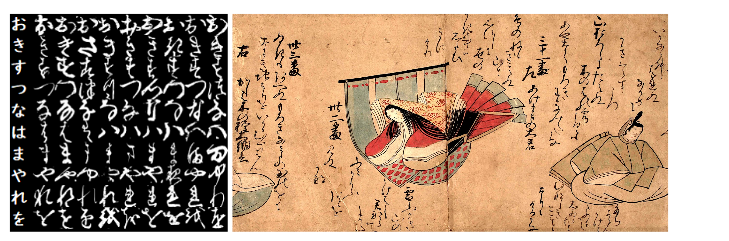
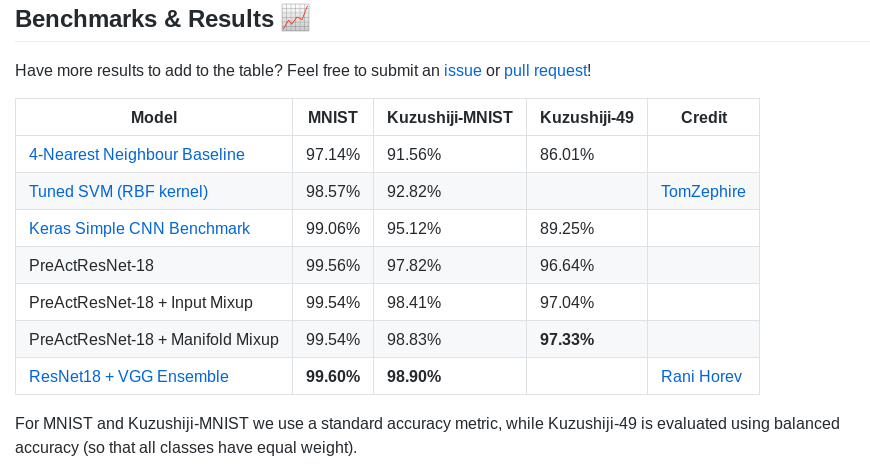
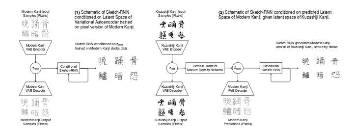

This blogpost is a short summary of the research paper authored by Tarin Clanuwat, Mikel Bober-Irizar(18 y.o Kaggle grandmaster), Asanobu Kitamoto, Alex Lamb, Kazuaki Yamamoto, David Ha. This research paper was presented in NeurIPS 2018.
Japan is an amazing place and my knowledge of the land of Samurais, bullets trains has increased after I started learning about this my paper which was mentioned as a must read materials for Kaggle competition of Kuzushiji Recognition.
Abstract
- To encourage ML researchers to produce models for Social or Cultural relevance to transcribe Kuzushiji into contemporary Japanese characters.
- To release Kuzushiji MNIST dataset, Kuzushiji 49 and Kuzushiji-Kanji datasets to general public.
Introduction
Historically, Japan and it’s culture had been isolated from the west for a long period of time. Untill the Meiji restoration in 1868, when a 15 year old emperor brought unity to whole of Japan which was earlier broken down into regional small rulers. This caused a massive change in Japanese Language, writing and printing system. Even though Kuzushiji had been used for over 1000 years there are very few fluent readers of Kuzushiji today (only 0.01% of modern Japanese natives). So now most Japan natives cannot read books written and published over 150 years ago. In General Catalog of National Books, there is over 1.7 million books and about 3 millions unregistered books yet to be found. It’s estimated that there are around a billion historical documents written in Kuzhushiji language over a span of centuries. Most of this knowledge is now inaccessible to general public.
With this research paper, three easy to use pre-processed datasets has been released for Machine learning research to help in Recognising Kuzhushiji, domain transfer of contents from unseen Kuzhushiji Kanji to Modern Kanji(classical Japanese literature). Also the baseline classification results for the same has been mentioned in this paper.

Kuzhushiji Dataset
The Japanese language can be divided into two types of systems:
Logographic systems, where each character represents a word or a phrase (with thousands of characters). A prominent logographic system is Kanji, which is based on the Chinese System.
Syllabary symbol systems, where words are constructed from syllables (similar to an alphabet). A prominent syllabary system is Hiragana with 49 characters (Kuzushiji-49), which prior to the Kuzushiji standardization had several representations for each Hiranaga character.
The Kuzhushiji dataset is created by National Institute of Japanese Literature(NIJL) and is curated by Center for Open Data in Humanities(CODH). This dataset includes characters in both Kanji and Hiranaga, based on pre-processed images of characters from 35 books from the 18th century. It includes 3 parts:
a)Kuzhushiji MNIST:
MNIST for handwritten digits is one of the most popular dataset’s till and is usually the hello world for Deep Learning. As a easy to process beginner dataset, this is consist of 10 classes with 7000 images for each. Yet there are fewer than 49 letters needed to fully represent Kuzhushiji Hirangana. So currently we choose 10 rows of Hirangana when creating dataset with 5 letter being stacked together to form this dataset. Each image is 28*28 pixel resolution. Kuzhushiji MNIST is more difficult compared to MNIST because for each image the chance for a human to detect characters correctly when a single image is of small size and is stacked together of 5 rows is very less. Also there are more challenges in Kuzhushiji recognition.
- Kuzhushiji 49:
As the name suggest, it is a much larger imbalanced dataset containing 49 hirangana characters with about 266,407 images. Both Kuzhushiji-49 and Kuzhushiji-MNIST consists of grey images of 28*28 pixel resolution. The training and test is split in ratio of 6/7 to 1/7 for each classes. There are several rare characters with small no of samples such as (e) in hirangana has only 456 images.
c)Kuzhushiji Kanji:
Kuzhushiji Kanji has a total of 3832 classes of characters in this dataset with about 140,426 images. Kuzhushiji-Kanji images are are of larger 64x64 pixel resolution and the number of samples per class range from over a thousand to only one sample. This dataset is not created merely for classification images, instead for more creative experimental task.
If you are interested in downloading the dataset with detailed documentation.
Experiments
Classification of Kuzushiji Characters
In machine learning and statistics, classification is a supervised learning approach in which the computer program learns from the data input given to it and then uses this learning to classify new observation. This data set may simply be bi-class (like identifying whether the person is male or female or that the mail is spam or non-spam) or it may be multi-class too when more than two objects needs to be classifed.
We try to focus on calculating the accuracy of recognising Kuzushiji datasets which in both Kanji and Hiragana, based on pre-processed images of characters from 35 books from the 18th century for datasets Kuzushiji-MNIST, Kuzushiji-49 and Kuzushiji Kanji, each having respectively 9, 49 and 3832 classes for the dataset.
The following table shows the accuracy of various algorithms which is used in the research paper baseline. ROIS-CODH calls out for improving the results on the Kuzushiji dataset and there are even interesting Kaggle competitions to get state of the art results for this competition.The current state of the art model which gives a better performance is Resnet networks being ensembled over Capsule networks.

According to paper we get 97.33% accuracy for dataset on using PreActResnet18 + manifold mixup and 98.9% accuracy for Resnet Networks ensembed over Capsule Networks. Let’s take a closer look at both this architectures:
- PreAct Resnet with Manifold mixup
A method for learning better representations, that acts as a regularizer and despite its no significant additional computation cost , achieves improvements over strong baselines on Supervised and Semi-supervised Learning tasks. Manifold Mixup is that the dimensionality of the hidden states exceeds the number of classes, which is often the case in practice.
When deeper networks starts converging, a degradation problem has been exposed: with the network depth increasing, accuracy gets saturated and then degrades rapidly. For almost all segmentation, classification and object detection and even regression with tabular data, Resnet gives state of the art results.
- Resnet networks ensembled with Capsule networks
The best results were achieved with an ensemble of VGG and ResNet – a 98.9% accuracy on the test set, which is a state-of-the-art result on the new dataset. TO unnderstand how this model gives this much accuracy, it’s essential to understand about Convolutional Neural networks. Capsule neural networks were introduced by Jeffrey Hinton and his team to solve a very important important disadvantage of Convolutional neural networks(CNN).
Internal data representation of a convolutional neural network does not take into account important spatial hierarchies between simple and complex objects. For a CNN, a mere presence of these objects can be a very strong indicator to consider that there is a face in the image. Orientational and relative spatial relationships between these components are not very important to a CNN. As a mere presence of 2 eyes, a mouth and a nose in a picture does not mean there is a face, yet CNN always see like that.
For objects in 3D representation, the relationship of various angles and poses are not properly mapped in a usual CNN. Yet deep learning to better model hierarchical relationships inside of internal knowledge representation of a neural network. Intuition behind them is very simple and elegant. This has been now possible due to a new algorithm for Dynamic Routing between Capsules, for calculating distance between capsule.
On blending our architecture with Resnets which help in converging our neural networks with less loss rate and using Capsule networks for better representation of objects. We are able to get state of art results for classifying Kuzushiji letters.
Domain Transfer
Domain transfer focuses on pixel images, we explore instead the transfer from pixel images to vector images, across two different domains ie from Kuzushiji japanese to contemporary Japanese. Our proposed model aims to generate Modern Kanji versions of a given Kuzushiji-Kanji input, in both pixel and stroke-based formats. We employ KanjiVG, a font for Modern Kanji (ie the Japanese Language) in both pixel and stroke format. This is a various interesting application to bring life to an almost extinct language with usage of Machine Learning.

Architecture of Domain Transfer
Input is converted to contempary language from the old Kuzushiji-KanjiVG format of 64x64px resolution format. We employ KanjiVG, a font for Modern Kanji in a stroke-ordered format. Variational Autoen-coders [14,18] provide a latent space for both Kuzushiji-Kanji and a pixel version of KanjiVG. A Sketch-RNN model is then trained to generate Modern Kanji strokes, conditioned on the VAE’slatent space. Predicting pixel versions of Modern Kanji using a VAE also aids human transcribers as the blurry regions of the output can be interpreted as uncertain regions to focus on.
We first train two separate ConvolutionalVariational Autoencoders, one on the Kuzushiji-Kanji dataset, and also a second on a pixel version ofKanjiVG dataset rendered to 64x64 pixel resolution for consistency. The architecture for the VAEis identical to and both datasets are compressed into their own respective 64-dimensional latentspace,Zold and Znew.
Components of this model
- Auto-encoder and decoder
They are widely used unsupervised application of neural networks whose original purpose is to find latent lower dimensional state-spaces of datasets, but they are also capable of solving other problems, such as image denoising, enhancement or colourization. Variational Autoencoders is used to provide latent space of KanjiVG to Kuzushiji Kanji. It’s used in the architecture to finetune the input and provide better colourization and enhancement. It’s used in complex generative models.
- Mixture Density Networks
Used to model density function to a new domain. It’s used for making the neural networks to translate from Kuzushiji Kanji to KanjiVG format in pixels.
- Sketch RNN
It’s a decoder network which conditions the model in a new latent vector.
Algorithm 1. Train two seperate variational autoencoder on pixel version of KanjiVG and Kuzhushiji-Kanji 2. Train mixture density network to mode P(Znew | Zold) as mixture of gaussians. 3. Train sketch RNN to generate Kanji VGG strokes conditioned on either znew or z~new ~P(Znew|Zold)
Why Not such a system for Malayalam?
In Malayalam , there are about 1200+ letters in the old Dravidian Malayalam which was prominently. In 1956 a government order reduced the total plausible characters as 120 to make it compatible with ASCII format.
in the current Malayalam alphabets there are not much characters. Yet there is no need for a domain transfer system in Malayalam all the Malayalam characters are mapped in Unicode format by Swanthanthra Malayalam community. So unlike in Japanese old and new letter mappings in unicode format are different while in Malayalam both have same unicode mapping.
Fin.